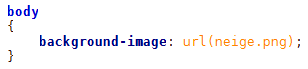

Fond de la page
Couleur de fond
Pour indiquer la couleur de fond de la page Web, il faut travailler sur la balise <body>. <body> correspond à l'ensemble de la page Web, c'est donc en modifiant sa couleur de fond que l'on changera la couleur d'arrière-plan de la page.
Code:CSS
-------------------------------------------------------------------------------------------------------------------------------------------
 En CSS, si on applique un style à une balise, toutes les balises qui se trouvent à l'intérieur prendront le même style. C'est en fait simple à comprendre et intuitif. La balise <body> contient entre autres les balises de paragraphe <p> et de titre <h1>.
En CSS, si on applique un style à une balise, toutes les balises qui se trouvent à l'intérieur prendront le même style. C'est en fait simple à comprendre et intuitif. La balise <body> contient entre autres les balises de paragraphe <p> et de titre <h1>.
Si on applique une couleur de fond noire et une couleur de texte blanche à la balise <body>, tous les titres et paragraphes auront eux aussi un arrière-plan de couleur noire et un texte de couleur blanche... C'est ce phénomène qu'on appelle l'héritage : on dit que les balises qui se trouvent à l'intérieur d'une autre balise « héritent » de ses propriétés.
-------------------------------------------------------------------------------------------------------------------------------------------
On peut également modifier le fond des titres h1, par exemple :
Code:CSS
Image et fond d'écran
La propriété « background-image permet d'insérer une image en fond. Dans l'exemple ci-dessous, on insère une image en fond d'écran
Code : CSS

Régi par la licence Creative Commons Attribution Non-commercial Share Alike 3.0 License